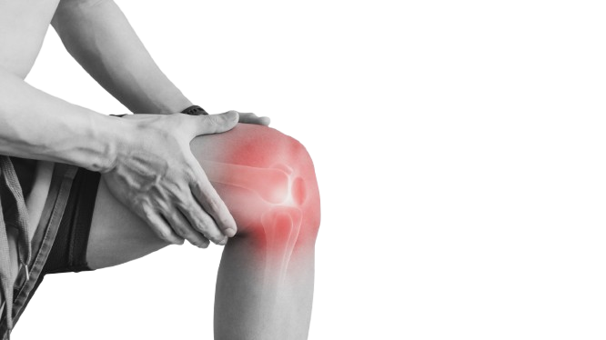

.png)
Benefits of losing weight
-
Lower your risk of developing Heart Disease
When you lose weight your blood pressure and your cholesterol levels both decreases, which decreases the stress that is put onto your arteries.

-
You will have less joint pain and overall mobility will increase
The pressure that is put onto your joints will decrease as you lose more weight and your mobility will increase as your body will have to move around less weight.

-
If you have type 2 diabetes, losing weight can help improve your type 2 diabetes
When you lose weight, the overall amount of fat on your body will decrease. The less fat you have on your body the better your body will react to insulin.

-
You lower your risk for developing certain kinds of cancer
As you lose weight, the amount of fat on your body decreases. Less fat on your body can help you homrone levels get back to normal, which will lower your risk of developing cancers because hormones control how your cells divide.

-
If you have Sleep Apnea and you lose weight, you will improve your Sleep Apnea
Losing weight will decrease the amount of fat that surrounds your neck which will improve airflow when you are sleeping at night. This is because there is nothing that is obstructing your airways.

- Your mental health will be improved and your self esteem will be improved.
Sources
Source 1 (Piedmont)Source 2 (Baptist Health)